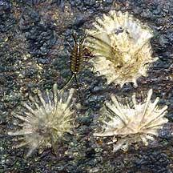
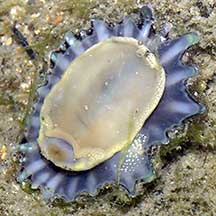

|
|
| shelled snails text index | photo index |
| Phylum Mollusca > Class Gastropoda > Limpets |
| Flat
false limpet Siphonaria atra Family Siphonariidae updated Aug 2020 Where seen? This large rather flattened limpet is sometimes seen on large boulders on some of our Southern shores near reefs. Usually settles near the low water mark. Features: 2-3cm long. Shell thick, rather flat (than pointed conical), with many (20 or more) thick ribs which are the same colour as the shell. There is no hole at the top the shell. Body plain white. A false limpet, it breathes through lungs instead of gills. |
|
 Pulau Hantu, May 05 |
 Underside. Sisters Islands, Sep 05 |
| Flat false limpets on Singapore shores |
On wildsingapore
flickr
|
| Other sightings on Singapore shores |
|
Links
References
|